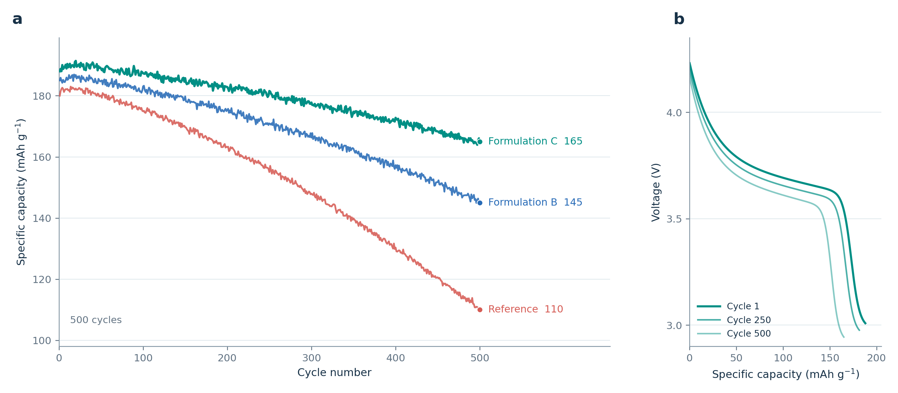
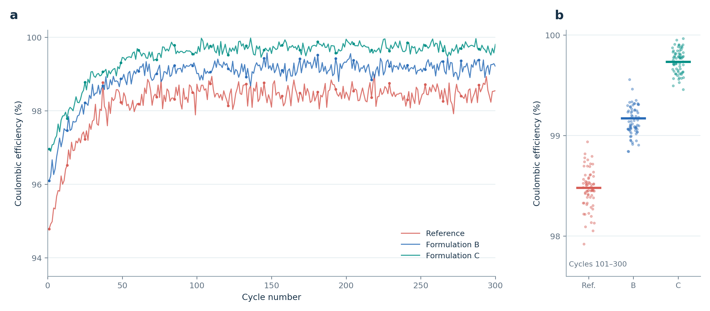

一份数据，画图重来好多遍
列名、单位、条件先看清，再做一版可编辑的图。
BatteryReviewForge · 电池科研开放工具
从实验数据到论文图，从零散图片到完整 Figure。还有电池综述的选题、写作和投稿。先告诉我们你手里有什么。
把重复劳动交出去
列名、单位、条件先看清，再做一版可编辑的图。
从主次和阅读顺序入手，再统一字号、留白和边界。
把问题、文献、图件和投稿要求接成一条能回看的线。
工具处理重复劳动；科学判断，始终在研究者手里。
图型在认真校对
我们正在按真实电池论文逐张核对画法。现有图片是软件教程，暂不作为投稿样图推荐。
逐圈 Li∥Cu 和 Aurbach 各有自己的数据与画法。
循环曲线和选定圈电压图，必须来自对应电芯与条件。
按目标期刊的毫米尺寸检查，而不是只看大屏幕。
这些图用于认识文件格式与操作步骤。里面有已知的图型问题，不能直接拿去投稿，也不会作为新图的默认模板。




所有样图用虚构数据或原创示意制作。 查看详细说明 ↗
其中六面板组合图把几组独立虚构数据放在一起演示排版，不代表同一次实验或已证实的因果关系。
左右使用同一组虚构源文件，只展示排版过程；这些图来自独立样例，不能当成一条实验或机制证据链。
真正投稿前，还要逐张核对来源、实际绘图区、字号和比例尺。
从你手里的材料开始
点一张卡片就能看到第一步。不知道该选什么也没关系。
漂亮很重要，可信更重要
新图输出到项目工作区，原始表格和图片单独保留；需要覆盖时由你决定。
平滑、剔除、归一化若影响结果，应先说清楚并记在处理记录里。
单位、电芯类型、倍率等缺失时先标出来，能确定的部分先做预览。
把数据文件、绘图步骤、参数和版本放在一起，后面改图找得到来路。
画完，你还可以自己改
大多数成图都会附 SVG。用免费的 Inkscape 打开，改文字、挪图例、调间距；想改数据，回到原表格重新出图就好。
到 Inkscape 官网免费下载从样图或自己的项目里找到 .svg，直接用 Inkscape 打开。
调整文字、图例和元素位置。别用拖动曲线的方式修改数值。
保存 SVG，再按期刊要求导出 PDF；缩到投稿尺寸看一遍。
你：这几份文件我不知道该怎么处理，先帮我看看。
助手先回答：我看到了 · 我能做 · 还缺什么 · 我建议先做哪一版
先看预览，再调整；原始文件留在你的项目文件夹。从这里开始
第一次不用记技能名称。下载、安装，然后把论文、表格或图片交给你常用的 AI 软件。
比如发一份循环数据，让它先看列名和单位；或发几张现成图片，让它帮你拼齐。下面有一句话可以直接复制。
第一句话，可以这样说
我有一份全电池循环数据。请先看看有哪些列、单位和测试条件，告诉我能画什么、还缺什么。能确定的部分先做；不要猜数值。
按软件找步骤
点它的名字，只看这一种软件的做法。看不懂命令时，先看每步上面的中文。
“技能”就是交给 AI 的操作说明；本项目还附有画图脚本。你不需要先学会写代码。
安装和基本调用已在我们的 Windows 电脑上试过。
powershell -NoProfile -File .\install.ps1Mac/Linux：在解压目录的终端运行下面这行。
sh install.sh提示“同名技能已存在”时，先确认旧版不需要保留。想用新版覆盖它，在同一窗口运行：
powershell -NoProfile -File .\install.ps1 -Overwrite安装位置按官方文档核过；完整画图任务还没在客户端测试。
powershell -NoProfile -File .\install.ps1 -Agent KimiCodesh install.sh --agent kimi导入入口按官方文档核过；完整画图任务还没在客户端测试。
文件放置方法按官方文档核过；完整任务还没在客户端测试。
powershell -NoProfile -File .\install.ps1 -Agent DeepSeekHarnesssh install.sh --agent dsh软件已经能聊天？本项目不需要你再申请一个专用账号或密钥。 需要排查安装问题？看详细说明 ↗
新手常问
可以先用选题、文献和写作技能。要让工具在你的电脑上从数据出图，某些功能需要安装 Python 依赖；先把任务交给 AI 助手，让它按步骤帮你检查环境。
不用背名字。点“我有数据 / 图片 / 综述”走三步引导，或把材料交给助手，让它先说清看到了什么、建议从哪一步开始。
你的原始数据和原图不会因为使用本项目就转给我们；我们也不要求你把成图权利转给项目。若用了他人的素材或 AI 软件，公开和投稿前还要核对素材授权、软件条款和期刊要求。
不会通过本网站上传：这里没有收文件的表单或项目后台。随包 Python 绘图脚本读写你指定的文件。若你把材料交给 Codex、Kimi 等 AI 软件，数据如何处理取决于那个软件和你账户的设置；敏感材料先确认课题组与平台规则。
随包绘图和拼图脚本不强制在图面加 BatteryReviewForge 标志或水印。必要的单位、条件限制和来源说明应保留。SVG/PDF 可能含创建者、日期等文件信息；单独的溯源 JSON 可能含数据路径。若用第三方图像服务，也要查看它的导出规则。
不会把网站样图的虚构数据当作你的结果。真实任务应从你提供的文件读取；缺列、缺单位或条件不清时要指出，不能编造数值。成图后仍请拿原始表格逐项核对。
随包的 Python 绘图和拼图脚本本身不主动把输入文件传到项目仓库。下载依赖或使用在线 AI 软件可能联网；如果材料不能外发，请先确认你用的软件运行位置和单位要求。
可以把成图当作投稿图件的起点。交稿前请用原始数据核对数值、单位和图注，确认他人素材的使用权，并按目标期刊当时的规定处理图件格式及 AI 辅助说明。
它是某些 Agent 连接模型服务时使用的密钥。是否需要 Key，取决于你用的软件和登录方式。先照该软件的官方步骤完成账号或模型设置，再安装本项目技能。
不要。这是静态介绍网站，没有填写密钥的表单。密钥只应放在你所用软件的官方设置位置，不要粘到聊天、截图或公开仓库里。
可以请它分析构图、配色和表达方式，再用你有权使用的原始数据重新制作。不要把别人的成图直接当作自己的素材发布；数值、来源和授权都要核对。
复杂拼图、示意图和图意判断会受模型看图和推理能力影响。模型影响“怎么设计”，不应该改变“数据是什么”；成图仍要和原始数据核对。
按阶段分工
13 个技能分别负责选题、证据、写作、出图、投稿和返修。先用上面的入口就够了。
一起把它做得更好
我们先把自己踩过的坑、做过的图和能复用的步骤整理出来。欢迎你拿去用，也欢迎把新的问题带回来。工具越多人一起打磨，大家就越能把时间花在真正值得想的地方。
项目作者与合作
上海理工大学能源材料科学研究院。我们把电池综述写作与科研绘图中反复遇到的问题整理成开放工具，欢迎同行一起完善。
查看作者与合作说明 ↗